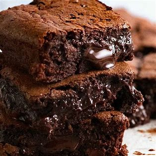

Brownies

Description
Right in the middle of fudgy and cakey, these easy brownies will make either crowd happyIt’s fast, easy, and uses everyday ingredients to make the ideal warmer weather dinner
Shout out to Food Network
Ingredients
- 16 tablespoons unsalted butter, plus more for greasing the foil
- 1 1/2 cups all-purpose flour
- 1/3 cup unsweetened cocoa powder
- 1/2 teaspoon fine salt
- 4 ounces semisweet chocolate, chopped
- 2 cups sugar
- 4 large eggs, slightly beaten
Instructions
- Preheat the oven to 350 degrees F
- Whisk together the flour, cocoa powder and salt in a medium bowl.
- Melt the butter and chocolate in a medium saucepan over medium heat, stir
- Add sugar, eggs and flour to the mix
- Pour the batter into the prepared pan
- bake from 30 to 35 minutes
- Let the brownies cool completely in the pan on a cooling rack